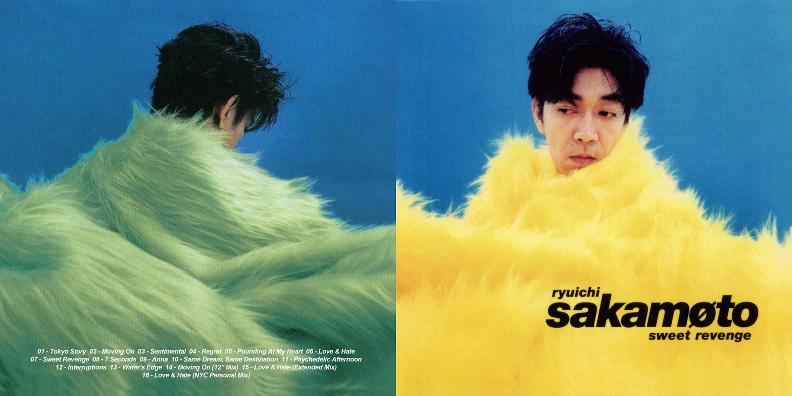

Ryuichi Sakamoto (坂本 龍一 Sakamoto Ryūichi, born January 17, 1952) (Japanese pronunciation:
[sakamoto ɾʲɯːitɕi]) is a Japanese musician, singer, composer, record producer, activist, writer,
actor and dancer, based in Tokyo and New York. He began his career while at university in the 1970s,
as a session musician, producer, and arranger. His first major success came in 1978 as co-founder of
the electronic music trio Yellow Magic Orchestra (YMO).With bandmates Haruomi Hosono and Yukihiro Takahashi,
Sakamoto helped play a pioneering role in the development of synth-pop, techno and house genres.
He concurrently pursued a solo career, releasing the experimental electronic fusion album
Thousand Knives (1978), and later released the album B-2 Unit (1980), from which "Riot in Lagos" influenced
the development of electro and hip hop music. He went on to produce more solo records, collaborate with many
international artists, and pursue a wide variety of projects, in different genres ranging from electronic to
classical and world music. He composed music for the 1992 Barcelona Olympics opening ceremony, and his composition "Energy Flow" (1999)
was the first instrumental number-one single in Japan's Oricon charts history.He has collaborated with a range of artists,
including David Sylvian, Carsten Nicolai, Youssou N'Dour, and Fennesz.
As a film composer, he has won an Academy Award, BAFTA, Grammy, and two Golden Globe Awards, and has received three BAFTA nominations
and four Golden Globe nominations. Merry Christmas Mr. Lawrence (1983) marked his debut as a film score composer and as an actor, and its main
theme was adapted into the single "Forbidden Colours" which became an international hit. His most successful work as a film composer was The Last
Emperor (1987), after which he continued earning accolades composing for films such as The Sheltering Sky (1990), Little Buddha (1993), and
The Revenant (2015). On occasion, Sakamoto has also worked on anime and video games, as a composer as well as a scenario writer. In 2009, he was
awarded the Ordre des Arts et des Lettres from France's Ministry of Culture for his musical contributions.
